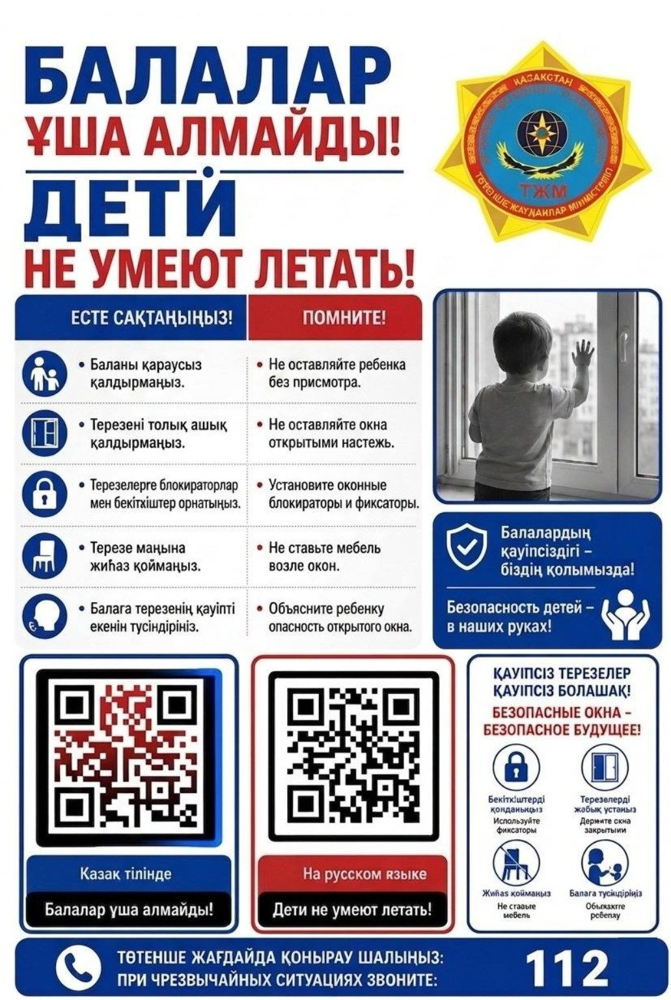
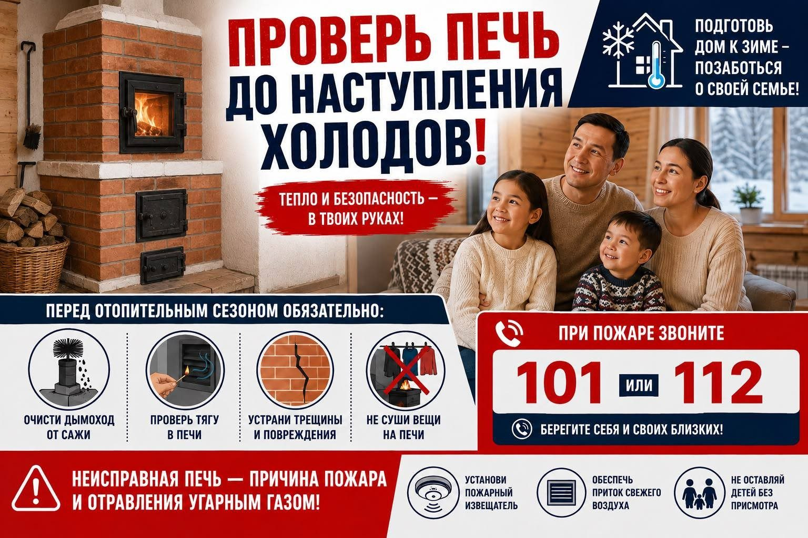
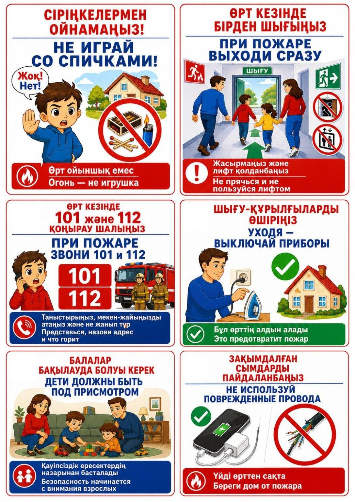
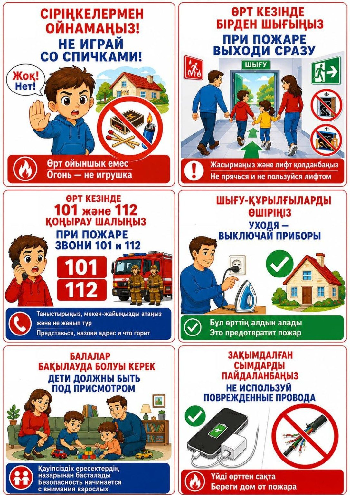
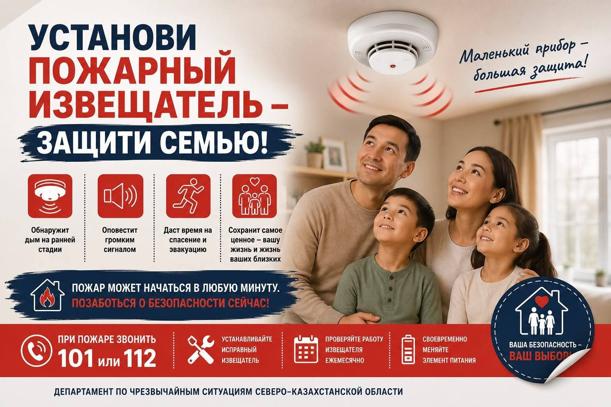

ДЫМОХОД
Очистите от сажи.
Короткая интерактивная памятка: проверьте окна, печь, электрику и подготовьте семью к чрезвычайной ситуации.

Не листайте всю памятку. Выберите ситуацию — сайт сразу перенесёт вас к нужным действиям.
Поэтому проверять дом лучше до того, как что-то произойдёт. Здесь — конкретные действия без лишнего текста.

Очистите от сажи.
Проверьте перед топкой.
Устраните повреждения.
Не сушите вещи на печи.
Как можно быстрее покиньте опасную зону. Не прячьтесь и не пользуйтесь лифтом.


ПОВРЕЖДЁННЫЕ ПРОВОДА — НЕТ
Не используйте кабели с повреждённой изоляцией.
ПЕРЕГРУЗКА — НЕТ
Не подключайте множество мощных приборов к одной розетке.
УХОДИШЬ — ПРОВЕРЬ
Утюг, плита и обогреватель должны быть выключены.
ДЕТИ — ПОД ПРИСМОТРОМ
Не оставляйте детей одних рядом с электроприборами.
Дымовой извещатель помогает заметить пожар на ранней стадии и даёт время на эвакуацию.
ПРОВЕРИТЬ В СПИСКЕ →
Отметьте выполненные пункты. Прогресс сохраняется на этом устройстве.
Найдите все опасности в комнате и устраните их. Выберите предметы, которые могут привести к пожару или травме.
Назовите адрес, сообщите, что произошло, и следуйте инструкциям диспетчера.
Откройте официальный бот Департамента по чрезвычайным ситуациям Северо-Казахстанской области в Telegram.
Установите памятку как приложение на телефон. Она открывается отдельным окном, запоминает вашу проверку дома и доступна даже без интернета после первого открытия.
После публикации QR-код будет вести прямо на эту страницу. Удобно разместить его на плакате, в подъезде или в школьном уголке безопасности.
Адрес появится после публикации